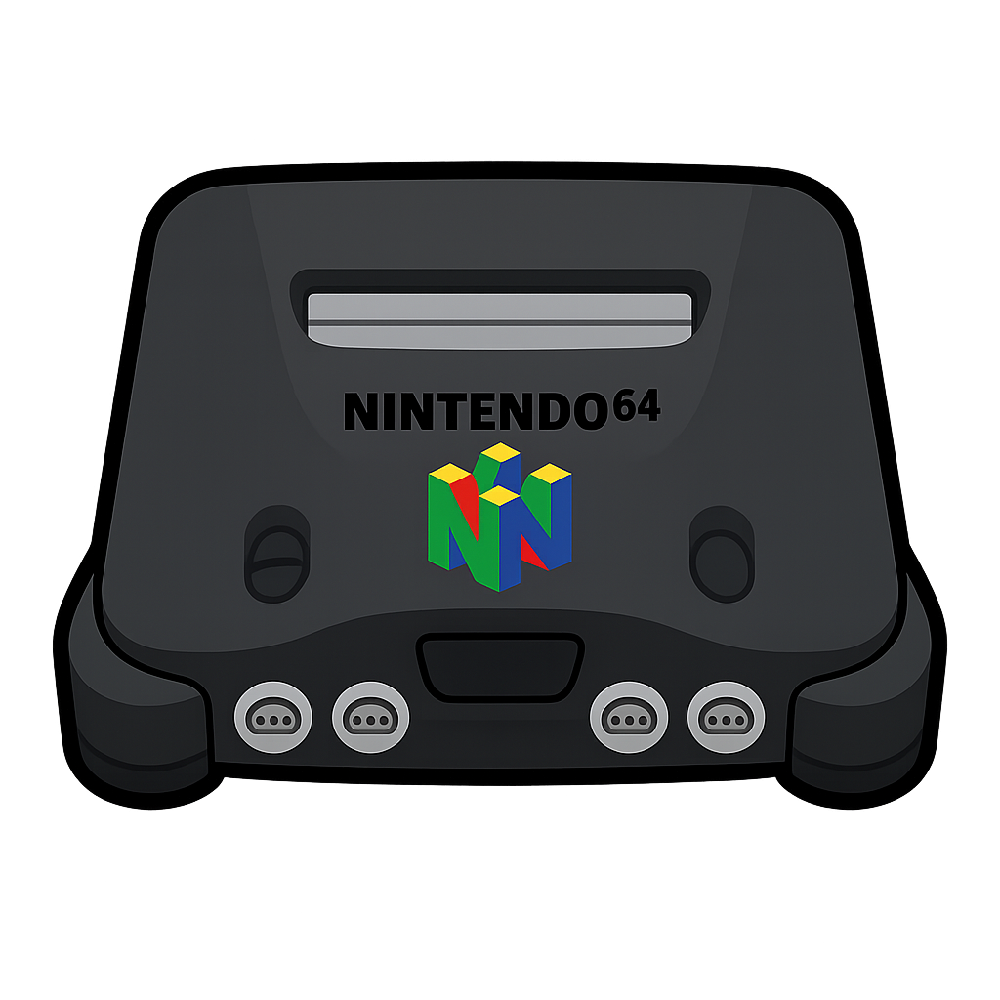
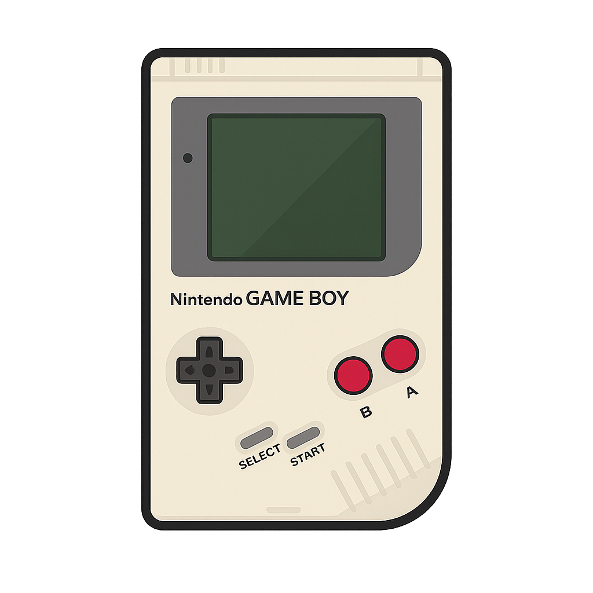
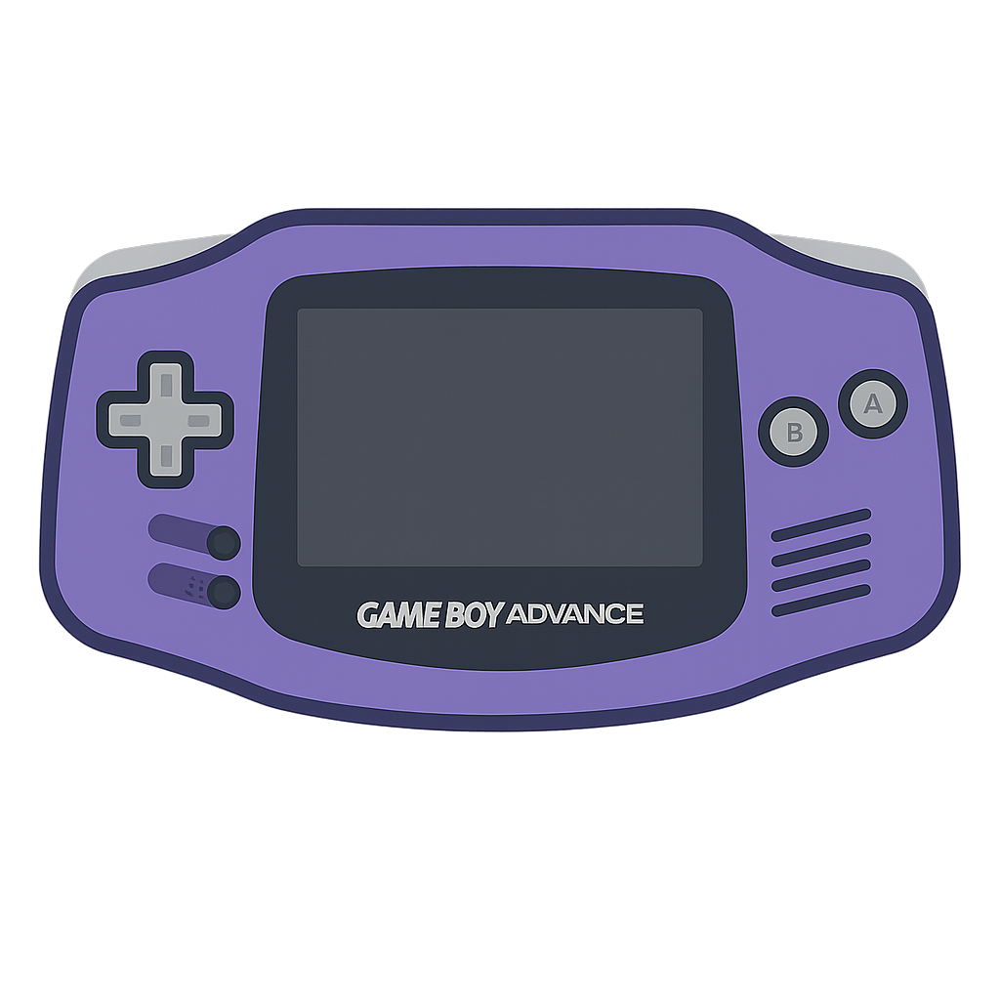
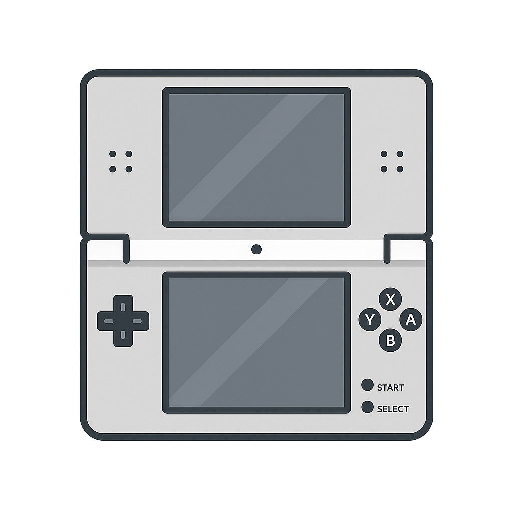
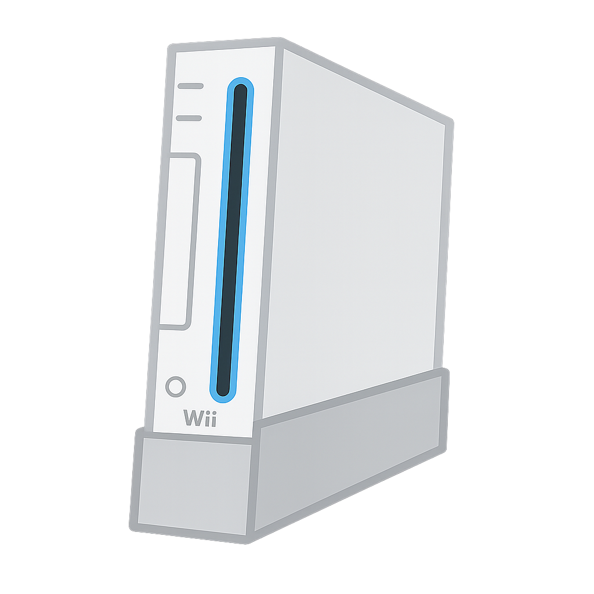
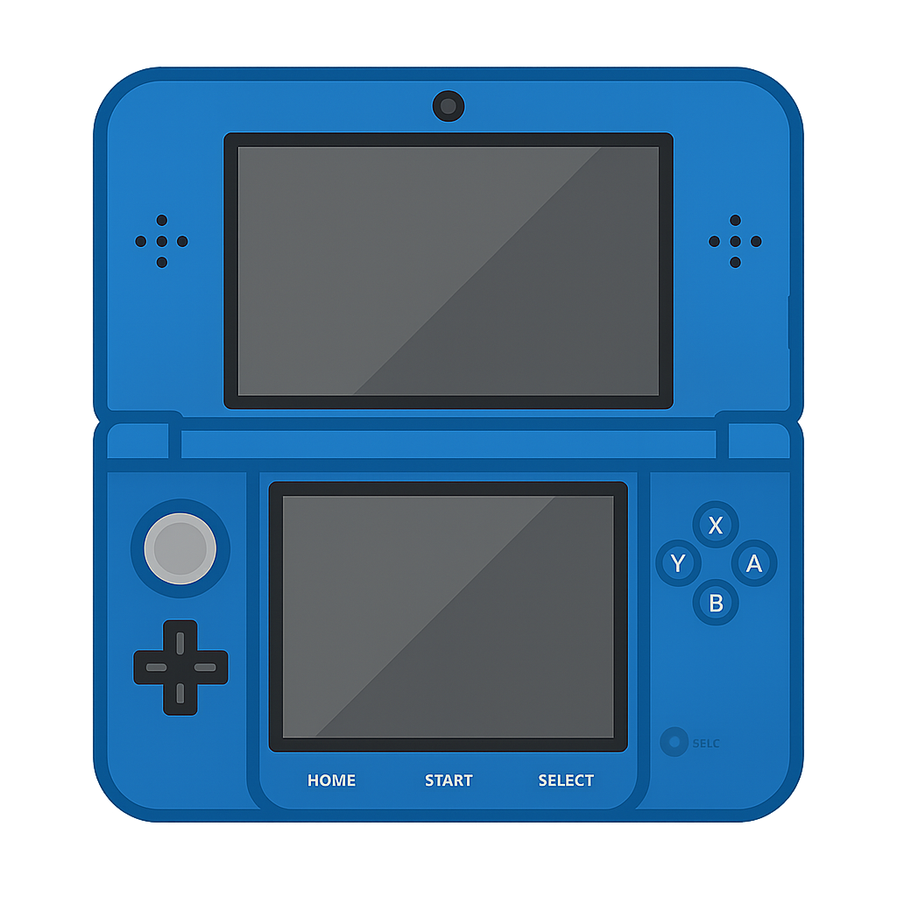
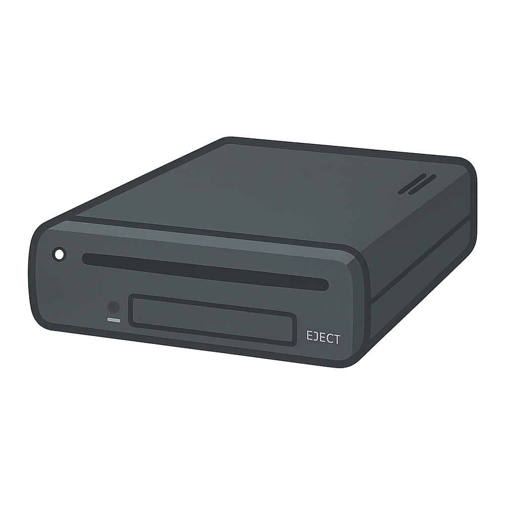
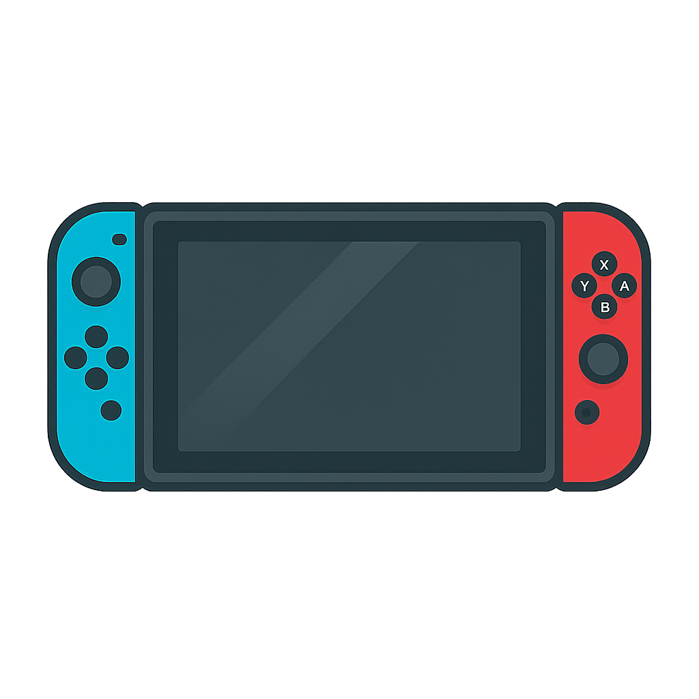

เลือกเฉพาะเกมที่ สำคัญ / เล่นสนุก / เป็นตัวแทนยุค ของแต่ละเครื่อง
| เกม | รายละเอียดย่อ | เหตุผลที่ควรเล่น |
|---|
| Super Mario Bros. | ต้นกำเนิดเกมแพลตฟอร์ม 2D | ปฏิวัติวงการเกมทั่วโลก |
| The Legend of Zelda | แอ็กชันผจญภัย มุมมองบนลงล่าง | จุดเริ่มซีรีส์ Zelda |
| Metroid | สำรวจอวกาศ กึ่ง open-world | บุกเบิกแนว Metroidvania |
| Mega Man 2 | แอ็กชันยิง ด่านท้าทาย | ภาคที่แฟนยกย่องที่สุด |
| Castlevania | เกมแอ็กชันปราสาทแดร็กคูล่า | บรรยากาศคลาสสิก กำเนิดซีรีส์ดัง |
| Duck Hunt | ยิงเป็ดด้วยปืน Zapper | เกมครอบครัวสุดฮิต |
| Punch-Out!! | ชกมวยจังหวะสนุก | มินิเกมเพลิน สุดท้าทาย |
| Contra | เกมยิงแอ็กชัน 2 คน | เล่นโค-ออปส์มันส์สุด |
| Final Fantasy | RPG ต้นกำเนิดซีรีส์ FF | จุดเริ่มต้น JRPG ยุคใหม่ |
| Dragon Quest | RPG บนแผนที่โลก | เกมที่ทำให้ JRPG ฮิตในญี่ปุ่น |
| เกม | รายละเอียดย่อ | เหตุผลที่ควรเล่น |
|---|
| Super Mario World | เกมเปิดตัว SNES | หนึ่งใน Mario 2D ที่ดีที่สุด |
| The Legend of Zelda: A Link to the Past | Zelda มุมมองบนลงล่าง | ดันเจียนซับซ้อน เนื้อเรื่องเข้ม |
| Super Metroid | Metroidvania ที่ลงตัว | บรรยากาศดาร์ก เกมเพลย์สุดยอด |
| Donkey Kong Country | แพลตฟอร์มกราฟิก 3D สวย | ดนตรีเพราะ เล่นโหดแต่มันส์ |
| Chrono Trigger | RPG ยอดตำนาน | เนื้อเรื่องหลายมิติ จบหลายแบบ |
| Final Fantasy VI | RPG เนื้อเรื่องดราม่า | หนึ่งใน FF ที่ดีที่สุด |
| Street Fighter II | เกมต่อสู้ 2D | จุดเริ่มต้นยุคเกมไฟท์ติ้ง |
| EarthBound | RPG ตลกร้าย | สร้างแรงบันดาลใจให้ Undertale |
| Secret of Mana | แอ็กชัน RPG เล่น 3 คน | เกมเพลย์สดใหม่ในยุคนั้น |
| Super Mario Kart | ภาคแรกของ Mario Kart | จุดกำเนิดเกมแข่งรถครอบครัว |
 Nintendo 64 (1996)
| เกม | รายละเอียดย่อ | เหตุผลที่ควรเล่น |
|---|
| Super Mario 64 | Mario 3D แรก | ปฏิวัติวงการเกม 3D |
| The Legend of Zelda: Ocarina of Time | Zelda 3D แรก | เกมอันดับ 1 ตลอดกาล |
| Mario Kart 64 | แข่งรถปาร์ตี้ | สนุกกับเพื่อน เล่นโหดได้ |
| GoldenEye 007 | FPS เล่น 4 คน | จุดเริ่มต้น FPS บนคอนโซล |
| Super Smash Bros. | เกมไฟท์ติ้งรวมฮีโร่ | จุดกำเนิด Smash Bros. |
| Banjo-Kazooie | แพลตฟอร์ม 3D | ฉากหลากหลาย ดนตรีเพราะ |
| Paper Mario | RPG กราฟิกกระดาษ | เอกลักษณ์เฉพาะตัว |
| Star Fox 64 | ยิงยาน 3D | ระบบ Rumble Pak สุดล้ำ |
| Perfect Dark | FPS จาก Rare | ระบบมัลติเพลเยอร์เจ๋ง |
| Pokémon Stadium | ต่อสู้โปเกมอน 3D | โหมดมินิเกมสนุกมาก |
 Game Boy (1989)
| เกม | รายละเอียดย่อ | เหตุผลที่ควรเล่น |
|---|
| Tetris | พัซเซิลคลาสสิก | เกมที่ทำให้ GB ฮิต |
| Pokémon Red/Blue | RPG จับโปเกมอน | จุดเริ่มซีรีส์ Pokémon |
| Pokémon Yellow | ภาคพิเศษมี Pikachu | อิงการ์ตูนอนิเมะ |
| The Legend of Zelda: Link’s Awakening | Zelda บนพกพา | เนื้อเรื่องอบอุ่น |
| Kirby’s Dream Land | เกมแรกของ Kirby | เล่นง่าย น่ารัก |
| Metroid II: Return of Samus | ภาคต่อ Metroid | เนื้อเรื่องสำคัญต่อซีรีส์ |
| Wario Land | ภาคสปินออฟ Mario | เกมเพลย์ใหม่สด |
| Dr. Mario | พัซเซิลยาเม็ด | คู่แข่ง Tetris |
| Donkey Kong | รีเมกแพลตฟอร์ม | ฉากใหม่กว่า 100 ด่าน |
| Final Fantasy Adventure | แอ็กชัน RPG | จุดกำเนิด Mana Series |
 Game Boy Advance (2001)
| เกม | รายละเอียดย่อ | เหตุผลที่ควรเล่น |
|---|
| Pokémon Ruby/Sapphire/Emerald | RPG ยุค Gen 3 | Battle Frontier (Emerald) |
| Pokémon FireRed/LeafGreen | รีเมกภาคแรก | อัปเกรดสู่ยุคใหม่ |
| Metroid Fusion | แอ็กชัน Metroidvania | เนื้อเรื่องเข้มสุด |
| Castlevania: Aria of Sorrow | Castlevania ยุคทอง | ระบบ Soul สุดล้ำ |
| Advance Wars | เกมวางแผนผลัดตา | กลยุทธ์ลึก |
| Fire Emblem | RPG กลยุทธ์ | ภาคแรกที่มานอกญี่ปุ่น |
| Mario Kart: Super Circuit | แข่งรถ Mario | ภาค GBA ที่สนุกจริง |
| Final Fantasy Tactics Advance | RPG กลยุทธ์ | เนื้อเรื่องแฟนตาซีเข้ม |
| The Legend of Zelda: Minish Cap | Zelda ภาคพิเศษ | ระบบหดตัวเล็กได้ |
| WarioWare, Inc. | มินิเกมเร็ว ๆ | ฮาสุดเพี้ยน |
 Nintendo DS (2004)
| เกม | รายละเอียดย่อ | เหตุผลที่ควรเล่น |
|---|
| New Super Mario Bros. | Mario 2D กลับมา | เข้าถึงทุกวัย |
| Mario Kart DS | แข่งรถสนุกสุด | ระบบออนไลน์แรก |
| The Legend of Zelda: Phantom Hourglass | Zelda บนทัชสกรีน | ใช้สไตลัสอย่างสร้างสรรค์ |
| Pokémon Diamond/Pearl/Platinum | Gen 4 | ระบบออนไลน์โปเกมอน |
| Pokémon Black/White | Gen 5 | เนื้อเรื่องโตสุดในซีรีส์ |
| Animal Crossing: Wild World | ชีวิตสโลว์ไลฟ์ | เล่นทุกวันไม่มีเบื่อ |
| Brain Age | เกมฝึกสมอง | กระแสเกม Casual |
| Phoenix Wright: Ace Attorney | เกมทนายความ | เรื่องราวเข้มข้น |
| Castlevania: Dawn of Sorrow | Metroidvania | ระบบจอคู่ |
| Professor Layton | พัซเซิล + เนื้อเรื่อง | แนวใหม่ สไตล์อบอุ่น |
 Nintendo Wii (2006)
| เกม | รายละเอียดย่อ | เหตุผลที่ควรเล่น |
|---|
| Wii Sports | เกมกีฬาครอบครัว | แพ็กอินยอดขายถล่ม |
| The Legend of Zelda: Twilight Princess | Zelda ภาคมืด | เนื้อเรื่องเข้มข้น |
| Super Mario Galaxy | Mario 3D บนจักรวาล | ดนตรีอลัง ฉากสร้างสรรค์ |
| Mario Kart Wii | แข่งรถ Motion | เล่นกับเพื่อนได้สนุกสุด |
| Super Smash Bros. Brawl | รวมฮีโร่ต่อสู้ | ภาคใหญ่ขึ้น |
| Xenoblade Chronicles | JRPG สุดอลัง | โลกกว้างมาก |
| Donkey Kong Country Returns | ภาคต่อ DK | โหด มันส์ |
| New Super Mario Bros. Wii | 2D Mario เล่น 4 คน | ครอบครัวชอบ |
| Metroid Prime 3: Corruption | FPS Sci-Fi | คอนโทรล Motion สุดล้ำ |
| Punch-Out!! (Wii) | เกมชกมวยรีเมก | สนุก เร้าใจ |
 Nintendo 3DS (2011)
| เกม | รายละเอียดย่อ | เหตุผลที่ควรเล่น |
|---|
| The Legend of Zelda: Ocarina of Time 3D | รีเมก Zelda N64 | เวอร์ชันที่ดีที่สุด |
| The Legend of Zelda: A Link Between Worlds | ภาคต่อ ALTTP | ระบบสลับโลก |
| Fire Emblem: Awakening | กู้ชีพซีรีส์ | เนื้อเรื่องสุดเข้ม |
| Pokémon X/Y | Gen 6 | กราฟิก 3D แรก |
| Pokémon Sun/Moon | Gen 7 | ปรับสูตรซีรีส์ใหม่ |
| Animal Crossing: New Leaf | AC ภาคสมบูรณ์ | ชุมชนสดใส |
| Luigi’s Mansion: Dark Moon | ล่าผี | น่ารักและสนุก |
| Mario Kart 7 | แข่งรถ | ระบบใต้น้ำ-ร่มบิน |
| Monster Hunter 4 Ultimate | แอ็กชันล่าแย้ | ระบบออนไลน์ดีมาก |
| Kid Icarus: Uprising | แอ็กชันชู้ตติ้ง | ระบบต่อสู้สุดมันส์ |
 Wii U (2012)
| เกม | รายละเอียดย่อ | เหตุผลที่ควรเล่น |
|---|
| Super Mario 3D World | Mario 3D เล่นหลายคน | ฉากสร้างสรรค์ |
| Mario Kart 8 | แข่งรถ | ยอดเยี่ยมสุด |
| Super Smash Bros. for Wii U | รวมไฟท์ติ้ง | สนุกกับเพื่อน |
| Splatoon | ชู้ตติ้งน้ำหมึก | IP ใหม่สุดดัง |
| The Legend of Zelda: Wind Waker HD | รีเมก Zelda GC | กราฟิกสดใส |
| The Legend of Zelda: Twilight Princess HD | รีเมก Zelda Wii | ปรับปรุงคุณภาพ |
| Xenoblade Chronicles X | RPG ขนาดใหญ่ | โลกมหึมา |
| Pikmin 3 | กลยุทธ์ RTS | น่ารักและลึก |
| Bayonetta 2 | แอ็กชันโหด | เกมเพลย์สุดมันส์ |
| Donkey Kong Country: Tropical Freeze | DK 2D | ยากแต่สนุก |
 Nintendo Switch (2017)
| เกม | รายละเอียดย่อ | เหตุผลที่ควรเล่น |
|---|
| The Legend of Zelda: Breath of the Wild | Zelda Open-world | เกมแห่งทศวรรษ |
| The Legend of Zelda: Tears of the Kingdom | ภาคต่อ BOTW | ระบบใหม่เพียบ |
| Super Mario Odyssey | Mario 3D | โลก Sandbox น่าเล่น |
| Mario Kart 8 Deluxe | แข่งรถ | ภาคสมบูรณ์ที่สุด |
| Super Smash Bros. Ultimate | รวมไฟท์ติ้ง | ตัวละครมากที่สุด |
| Animal Crossing: New Horizons | ชีวิตเกาะ | ฮิตทั่วโลก |
| Splatoon 2/3 | ชู้ตติ้งหมึก | สนุกทั้งโซโล/มัลติ |
| Fire Emblem: Three Houses | RPG กลยุทธ์ | เนื้อเรื่องเข้ม |
| Metroid Dread | Metroidvania 2D | ภาคใหม่สุดมันส์ |
| Xenoblade Chronicles 2/3 | JRPG | เนื้อเรื่องอลังการ |